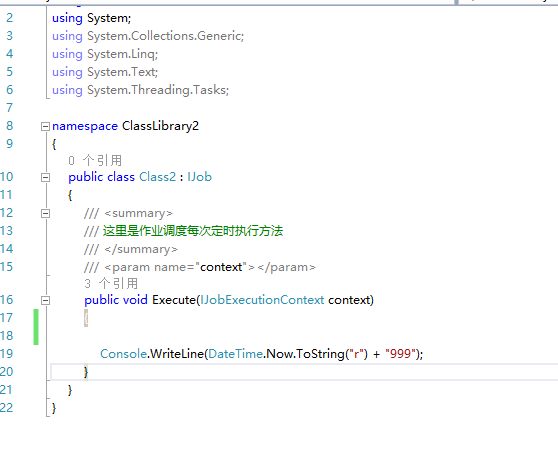
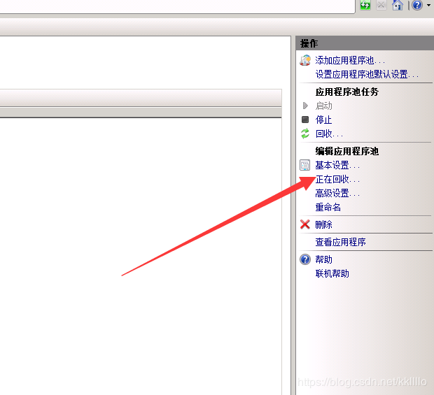
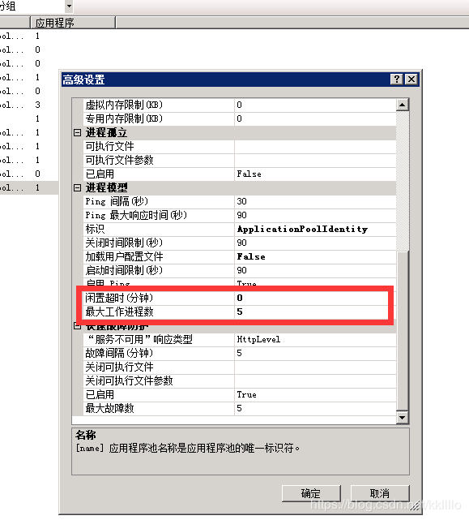
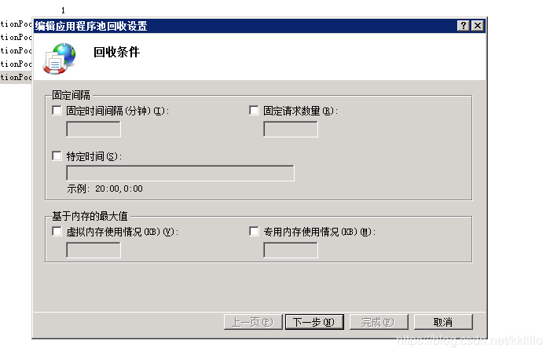

在项目的开发过程中，难免会遇见后需要后台处理的任务，例如定时发送邮件通知、后台处理耗时的数据处理等，这个时候你就需要Quartz.Net了。
Quartz.Net是纯净的，它是一个.Net程序集，是非常流行的Java作业调度系统Quartz的C#实现。
Quartz.Net一款功能齐全的任务调度系统，从小型应用到大型企业级系统都能适用。功能齐全体现在触发器的多样性上面，即支持简单的定时器，也支持Cron表达式；即能执行重复的作业任务，也支持指定例外的日历；任务也可以是多样性的，只要继承IJob接口即可。
对于小型应用，Quartz.Net可以集成到你的系统中，对于企业级系统，它提供了Routing支持，提供了Group来组织和管理任务，此外还有持久化、插件功能、负载均衡和故障迁移等满足不同应用场景的需要。
我们使用的是当前最新版本2.4.0进行演示。（注意：高版本不适合当前教程）添加引用以后，来创建一个Job类

1 static void Main(string[] args)
2 {
3 //1.首先创建一个作业调度池
4 ISchedulerFactory schedf = new StdSchedulerFactory();
5 //2.实例化调度器工厂
6 ISchedulerFactory schedulefactory = new StdSchedulerFactory();
7 //3.实例化调度器
8 IScheduler scheduler = schedulefactory.GetScheduler();
9
10 //4.创建一个作业
11 IJobDetail job1 = JobBuilder.Create<Class1>()
12 .WithIdentity("demojob1", "groupa")
13 .Build();
14
15 //5.1:第一种方法直接写死多少秒执行一次
16 //ITrigger trigger1 = TriggerBuilder.Create()//创建一个触发器
17 // .WithIdentity("demotrigger1", "groupa")
18 // .StartNow()
19 // .WithSimpleSchedule(b => b.WithIntervalInSeconds(5)//5秒执行一次
20 // .RepeatForever())//无限循环执行
21 // .Build();
22
23 //5.2推荐：第二种使用cron表达式
24 //在线生成cron表达式： http://cron.qqe2.com/
25 string corn = "*/10 * * * * ?";
26 ITrigger trigger1 = TriggerBuilder.Create()
27 .WithIdentity("demotrigger1", "groupa")
28 .WithCronSchedule(corn)//每一小时执行一次
29 .Build();
30
31 //6.添加参数（键值对），如果不需要传参则忽略这一步
32 //方法内获取你传的参数： string Name = context.Trigger.JobDataMap.GetString("Name");
33 trigger1.JobDataMap.Add("Name", "刘玄德");
34
35 //7.把作业，触发器加入调度器
36 scheduler.ScheduleJob(job1, trigger1);
37 //8.开始运行
38 scheduler.Start();
39 }以上就是最简单的Quartz的使用事例
2.下面是我个人的一点扩展
1 Type type = Type.GetType("test1.TestCase");//获取类 ""里为 命名空间.类名
2 Object obj = Activator.CreateInstance(type);//这里创建
3 //4.创建一个作业
4 IJobDetail job2 = JobBuilder.Create(obj.GetType())
5 .WithIdentity("demojob1", "groupa")
6 .Build();
7 //适合已经存在的方法动态添加定时任务
1 //适合在不改变代码的情况下，动态添加要定时执行的方法(前面是文件物理地址（可以使用映射将虚拟地址转换成物理地址） ，后面是命名空间加类名)
2 object obj = Assembly.LoadFile(@"D:\普通文件袋\测试\ClassLibrary2\bin\Debug\ClassLibrary2.dll").CreateInstance("ClassLibrary2.Class2");
3 //4.创建一个作业
4 IJobDetail job2 = JobBuilder.Create(obj.GetType())
5 .WithIdentity("demojob1", "groupa")
6 .Build();
3.Quartz.NET 部署在IIS上，防止被动态回收(个人建议不要使用IIs服务器)


